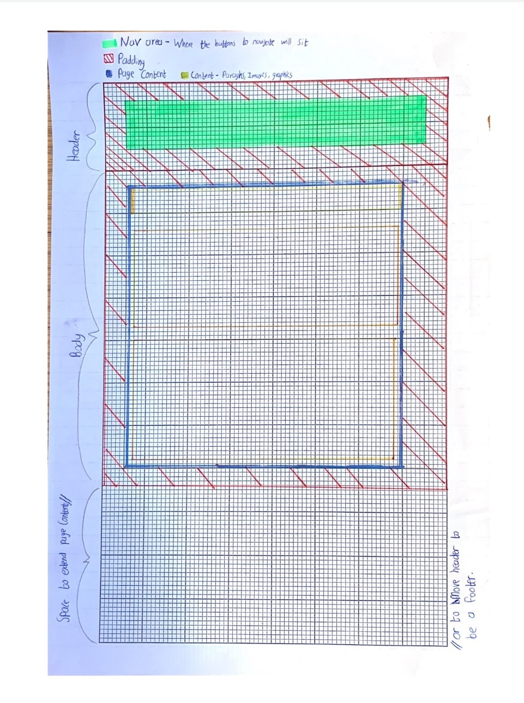

For now, I am keeping the wireframe I am keeping the wireframe simple. The header will occupy the top 1/5th or 1/6th of the page. The rest will be page content that can expand downwards to compensate for the content on the page. There is some extra space at the bottom I could use as a footer or move the header down to be a footer.
This wireframe should be compatible for mobile and it focuses on the vertical nature of mobile phones. The padding around each interactable section of the wireframe should mean that no page content is left right at the edge of screen. Where it is either hard to see or hard to click on.
